Esta room es igual a una anterior vista, Blaster, la única diferencia es que esta no te guía tanto en THM, pero la resolución es igual, salvo por un molesto bug que aparece en Windows Server, que no nos deja escalar privilegios de la misma manera.
Empezamos con un escaneo de puertos a la máquina host:
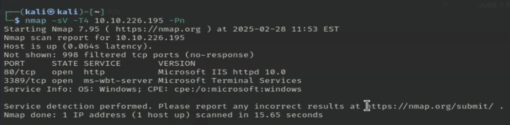El creador nos dice que no podemos hacer ping a la máquina, por eso ponemos -Pn.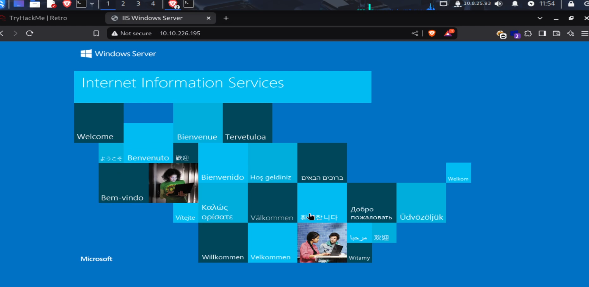
En el puerto 80 encontramos el index por defecto de Microsoft IIS.
Hacemos un fuzzeo de los directorios:
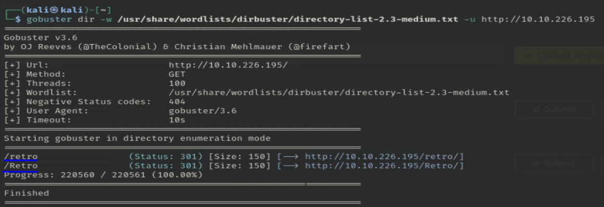/retro y /Retro son el mismo directorio.
Encontramos el directorio /retro, que parece ser un blog personal de Wade donde habla de videojuegos, películas y curiosidades:
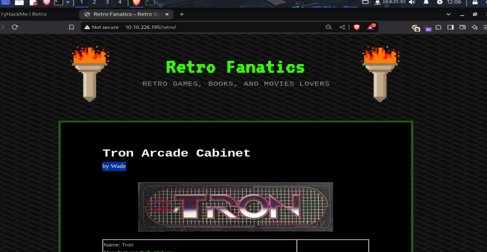En una entrada del blog:
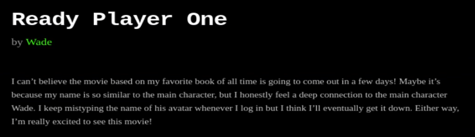Wade nos da una pista de su contraseña para logearse en el sistema: el nombre del avatar del personaje con su mismo nombre de la película/libro Ready Player One.
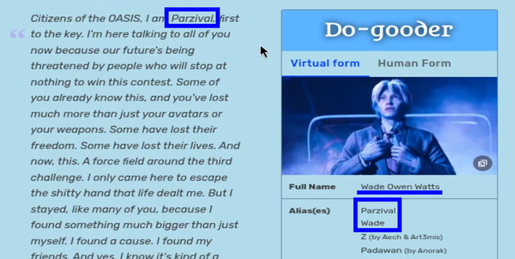 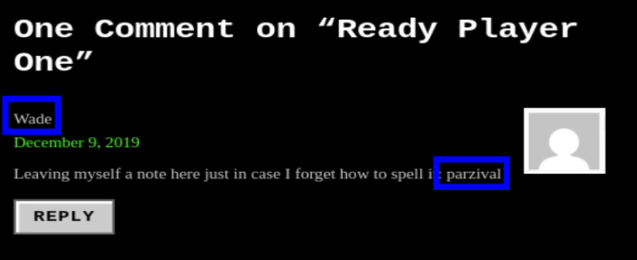Usamos Remmina para conectarnos por escritorio remoto a la máquina host con las credenciales encontradas:
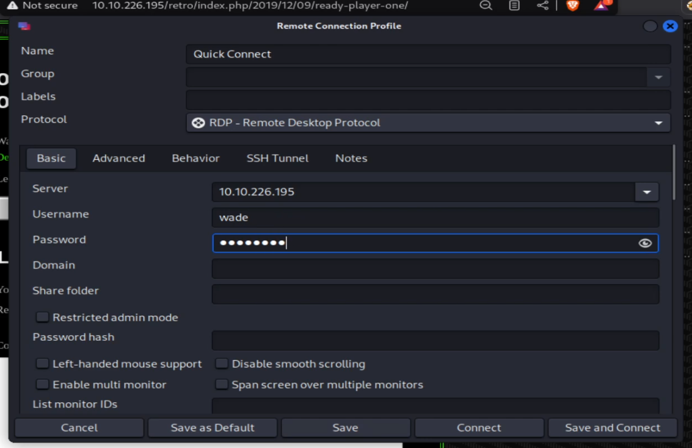 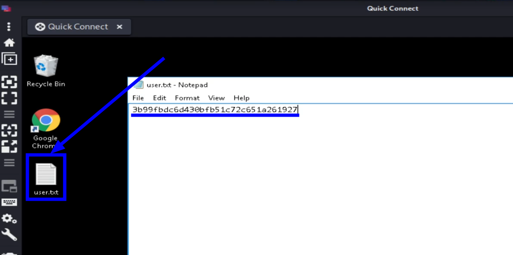Encontramos la primera flag.
En la papelera encontramos un archivo desconocido:
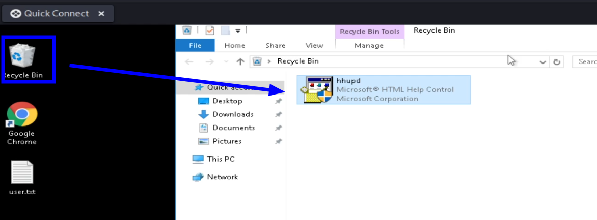En el historial del navegador encontramos la página del CVE-2019-1388, cuya explotación está explicada en este repositorio:
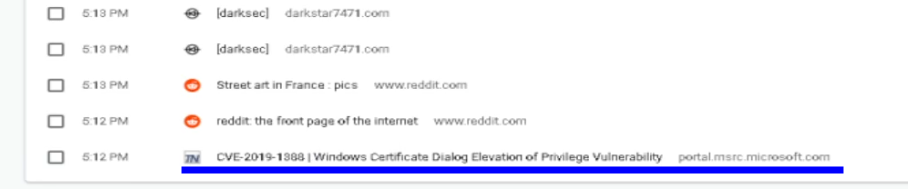Iniciamos la aplicación de la papelera:
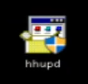Le damos a Show more details:
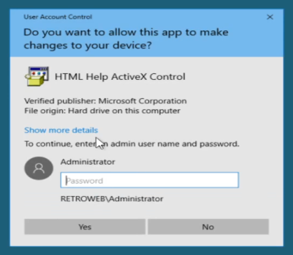Y a la página del certificado:
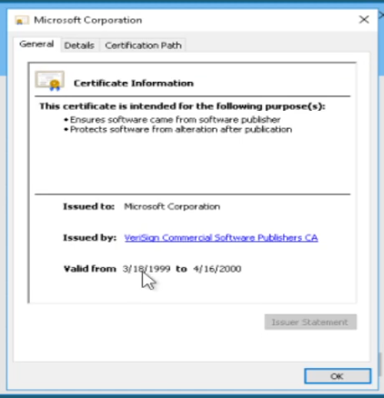 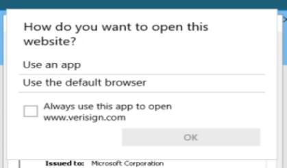Aquí debería salirnos Google Chrome o Internet Explorer, pero no lo hace. Es un bug de Windows Server, por lo que no podemos resolver la máquina de la misma forma.
Buscando en internet y preguntando a ChatGPT, encontramos el CVE-2017-0213:
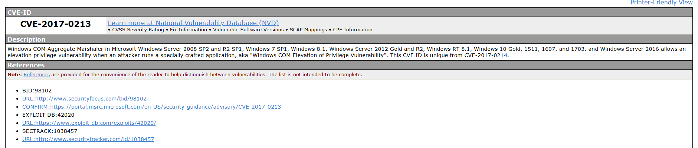Permite escalar privilegios al iniciar una aplicación específica. En el repositorio de eonrickity encontramos la aplicación necesaria para escalar privilegios:
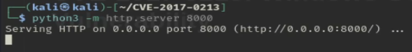 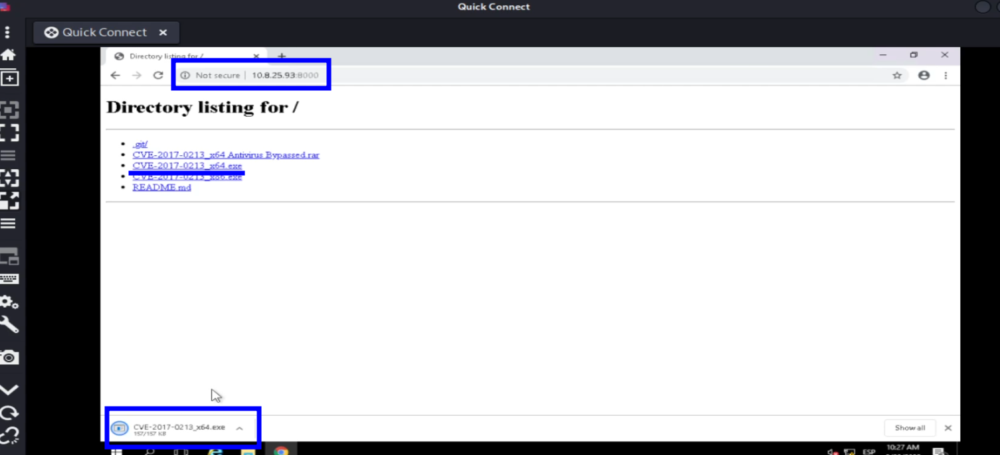Descargamos y ejecutamos el exploit, y automáticamente seremos administradores:
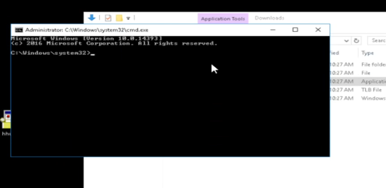 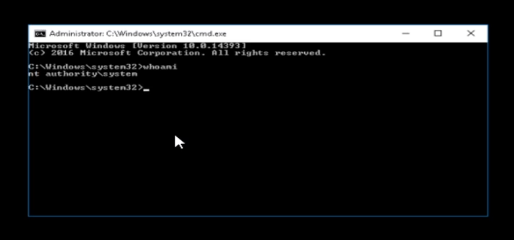 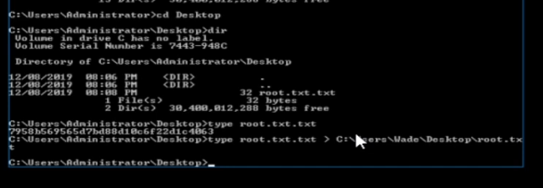Como no podemos copiar y pegar en esta terminal, hacemos un type (cat de Windows) y lo redirigimos al escritorio de Wade.
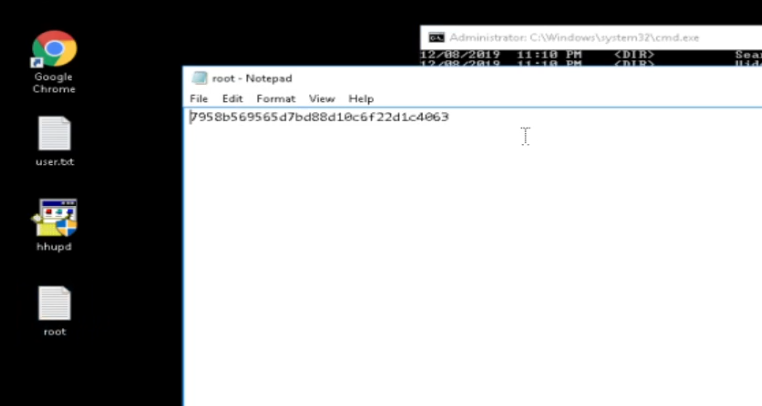
Última flag encontrada.